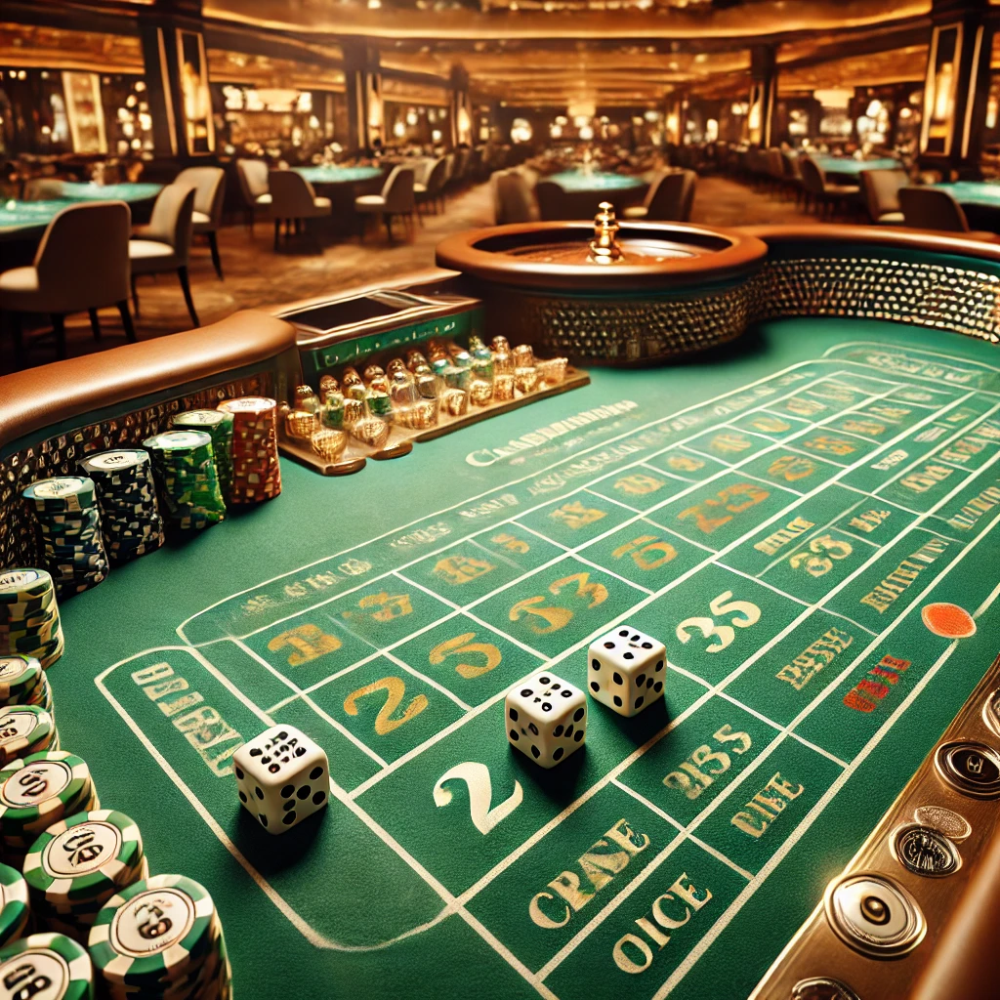
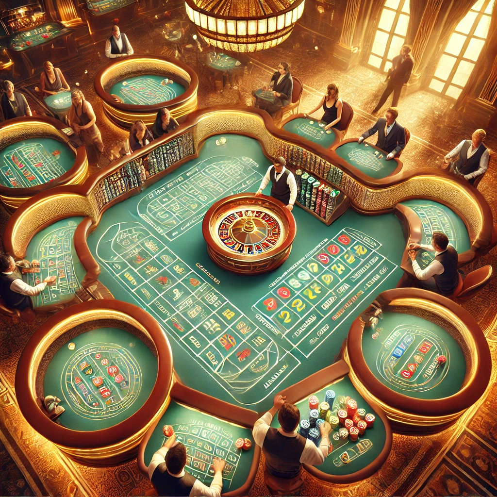

Règles & Stratégies au Craps : Comment jouer au Craps ?
Chance, excitation et gains élevés : ce sont les éléments recherchés par les joueurs au Keno. Ce jeu, très prisé en France, est largement disponible dans les casinos. Cependant, la qualité peut varier d'un établissement à l'autre.
Les règles de base du Craps
Le jeu de craps repose sur la prévision des résultats des dés. La partie débute par le choix de deux dés, l'un rouge et l'autre noir, parmi les six disponibles présentés par le stickman. Une fois les mises placées sur les zones appropriées, le premier lancer, appelé le Come Out Roll, peut avoir lieu. Ce lancer est effectué à tour de rôle dans le sens des aiguilles d’une montre, sous la supervision du chef de table. Les deux autres employés du casino aident les joueurs à placer leurs mises et récupèrent les gains éventuels.
Les différentes variantes du Craps
Le craps est particulièrement apprécié pour sa capacité à offrir une grande variété de plaisirs. En effet, au-delà de sa version traditionnelle, ce jeu de dés se décline en plusieurs variantes passionnantes.
Le Bastard Craps ou le Crapless Craps
Il est crucial de se souvenir qu'il faut absolument éviter le chiffre 7 dans cette version du jeu. Si ce chiffre apparaît lors du premier lancer ou avant que le Point ne soit établi, le joueur perd immédiatement. Pour avoir une chance de gagner, il est impératif de lancer un Craps (2, 3 ou 12) ou un Naturel (11). Enfin, comme dans les autres variantes du jeu, le 7 annule le lancer initial.
Le High Point Craps
Le joueur qui obtient un 11 ou un 12 remporte automatiquement la partie. En revanche, si le résultat est un autre chiffre que le 2 ou le 3, ces derniers étant ignorés, il marque un Point. Il devra alors effectuer un second tirage pour finaliser ce résultat et valider ses gains. Un tirage de 7 entraîne un retour immédiat au point de départ.
Le New York Craps
Si vous préférez les mises traditionnelles ainsi que les paris « Come » et « Don’t Come », ce jeu n’est pas fait pour vous. Cette variante, très populaire dans l’Est des États-Unis et en Grande-Bretagne, fonctionne avec des paiements basés sur les probabilités réelles, offrant des gains pour tout numéro entre 4 et 10, à l'exception du 7.
Le Private Craps
Sans règles strictes, sans banque et sans casino, le Private Craps est un jeu où seuls les joueurs donnent libre cours à leurs désirs. Généralement joué en privé, il est interdit dans plusieurs pays. Ce jeu offre au lancer de dés la possibilité de gagner tous les gains, sous réserve de faire le bon pronostic.
Le Simplified Craps ou Craps Simplifié
Pour maximiser les gains, il est crucial de ne lancer que les chiffres suivants : 2, 3, 4, 10, 11 ou 12. Si le dé affiche un 5, 6, 7, 8 ou 9, la partie est immédiatement terminée pour le joueur. Les règles de ce jeu sont aussi simples que son nom l’indique, en restreignant les combinaisons gagnantes. Cependant, cette limitation est compensée par des rapports de paiement particulièrement avantageux.
Quels sont les profils psychologiques des joueurs de craps ?
Une atmosphère chaleureuse, teintée d'excitation et d'appréhension, caractérise les environs d'une table de craps. Bien que les participants partagent de nombreux aspects communs, chacun d'eux possède des préférences, des aspirations et des rêves uniques.
Gagner gros au craps : les meilleures stratégies à copier
La chance n’est pas un facteur fiable au craps. Bien que nécessaire, elle est moins déterminante que la maîtrise des bonnes stratégies. Il est crucial de commencer par apprendre à gérer sa bankroll de manière efficace pour se prémunir contre les imprévus. Pour minimiser les risques, il est recommandé de se fixer des limites en utilisant des systèmes de mise comme le Paroli ou la Martingale.
Et les tournois de craps, on en parle ?
Ces tournois d'une durée d'environ trois heures représentent des occasions idéales pour gagner de l'argent. Comment y parvenir ? En accumulant le maximum de jetons possible et en creusant un écart significatif dans le classement.
Les meilleurs conseils à appliquer pour remporter gros
Pour augmenter vos chances de repartir avec des gains substantiels au craps, il existe plusieurs stratégies clés à adopter :
- Choisissez des Tables Abordables : Avant de vous lancer, évaluez vos dépenses potentielles et établissez un budget. En sélectionnant des tables adaptées à votre budget, vous évitez les pertes et multipliez vos opportunités de victoire.
- Optez pour les Mises Stratégiques : Dans les jeux de hasard, il est essentiel de privilégier les mises les plus fiables, même si elles offrent des gains modérés. Au craps, les mises « Pass Line » et « Come Bets » sont reconnues pour leur fiabilité.
- Faites Preuve de Patience : La patience et l’observation sont cruciales au craps. Ces qualités ont sauvé de nombreux joueurs, même les plus expérimentés.
- Maintenez Votre Calme : Pour exceller au craps en ligne, la décontraction, la concentration et le calme sont essentiels.
- Choisissez des Sites de Jeu Fiables : Assurez-vous de jouer sur des plateformes de jeu réputées, avec des taux de redistribution élevés et des processus de paiement automatisés.
Les Bonus de Craps, une bonne solution pour s’entrainer
Pour profiter des meilleurs bonus au craps, il est impératif de réaliser un premier dépôt. En retour, vous aurez accès à des bonus très avantageux offerts par les casinos.